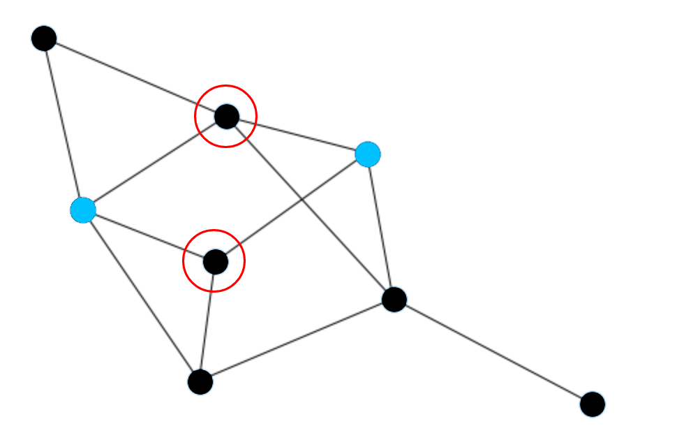

Select the common nodes between two highlighted nodes
In this task, you will be given a graph with 2 highlighted nodes. Using your pointer, select all nodes that are linked to both highlighted nodes as quickly as possible. An example is below (the red circle indicate the nodes a user should select):
At the beginning of each condition, you will receiving training for the device you are using. When you are ready, please click CONTINUE.